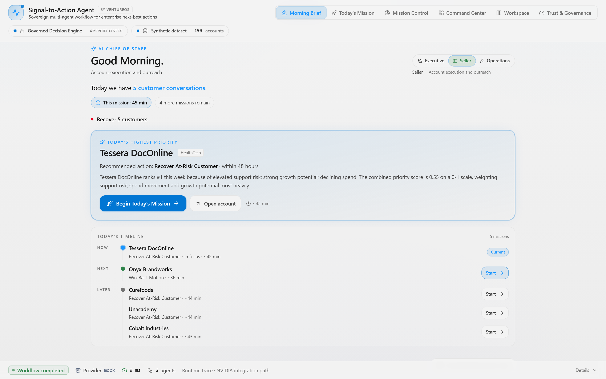
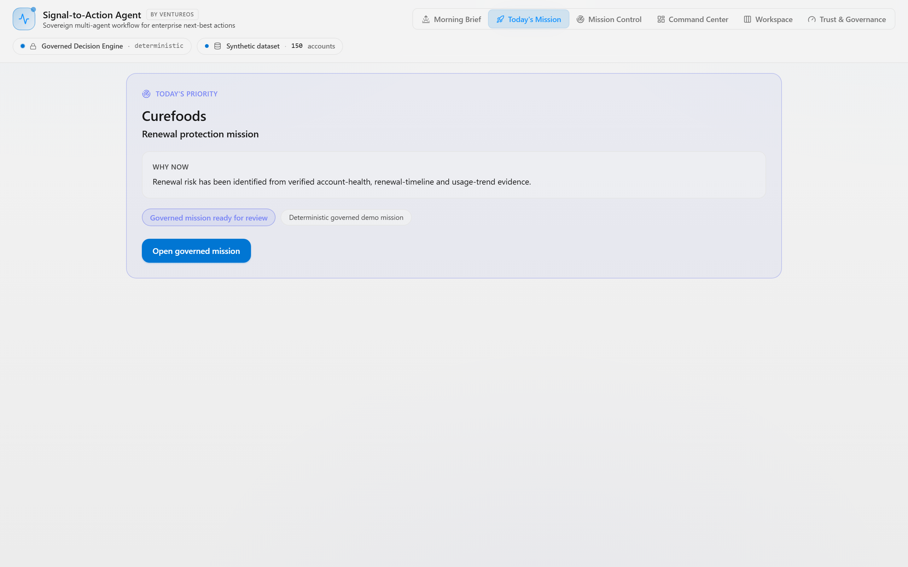
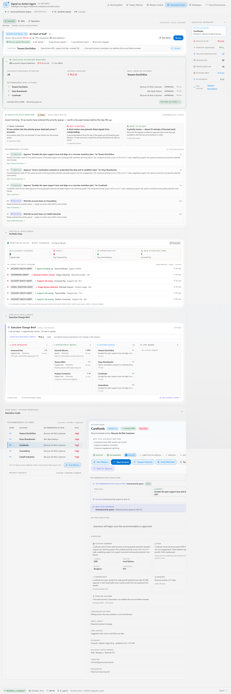
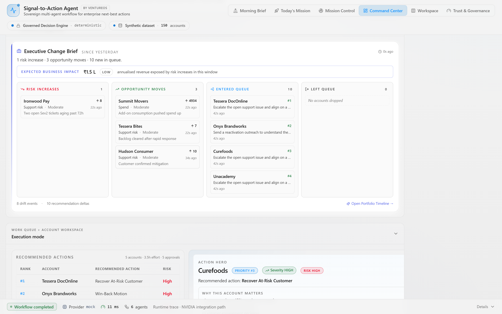
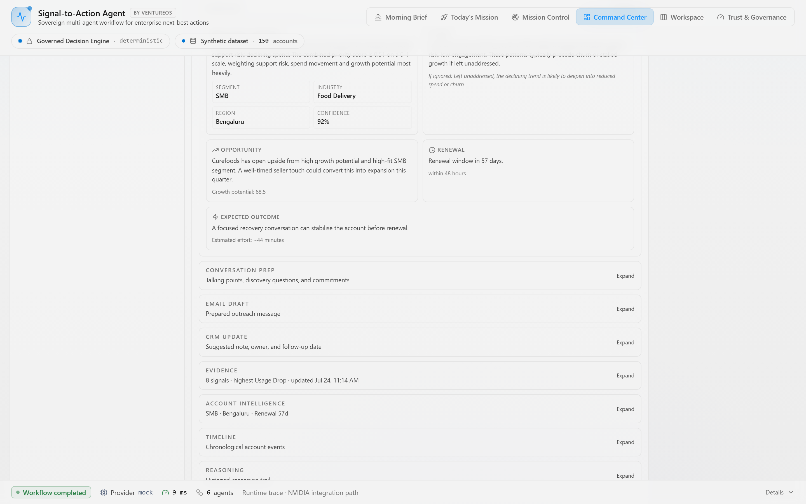

AI Chief of Staff work briefing
Seller Morning Brief
Not a dashboard — a work briefing. This mission's effort, an action narrative (recover / prepare / follow up), and a Now / Next / Later mission timeline.
Built using APEF · VentureOS · Signal-to-Action Agent is the first application.
Enterprise AI that doesn’t just answer questions — it remembers context, explains decisions, and guides work from insight to execution. With human approval as a non-negotiable step before anything changes.

It should understand the situation, explain what matters, and guide people through the work. That is the operating premise behind every design decision in VentureOS.
AI speaks first. The AI persona opens the day with a situation summary, a recommendation, and a reason. The user does not hunt for context.
One recommendation. Not a list of options. One prioritized, evidence-backed recommendation the user can approve, reject, or edit.
Evidence builds trust. Every recommendation cites its evidence. Every confidence score is traceable. Nothing is declared without a reason.
Memory creates continuity. The AI remembers what happened yesterday, who was coached, which missions are open, and what changed. It does not start from zero every morning.
Human approval is non-negotiable. AI recommends. AI explains. AI drafts. A person approves. Nothing touches the CRM, the customer, or the record without a human decision.
Architecture before implementation. Every feature is designed before it is coded. The deterministic intelligence layer is independent from presentation. Voice and Digital Human companions are adapters — not the product.
Every recommendation travels the same controlled workflow. Deterministic intelligence decides priority; AI explains and drafts; a human approves before anything reaches the customer record.
Production screenshots from the live app. VentureOS now begins each persona's day differently — then guides the seller through the work with first-class Mission Mode. These surfaces are confirmed in the deployed build today.

Not a dashboard — a work briefing. This mission's effort, an action narrative (recover / prepare / follow up), and a Now / Next / Later mission timeline.
A focused seven-step flow — Review, Evidence, Outreach, CRM Note, Approval, Execution, Outcome. The seller always knows where they are and what comes next.

What was accomplished, business impact, governance and execution status, and the next recommended mission with one CTA to continue.

The highest-priority accounts for this week with ranked urgency, reason, and evidence-aware focus.

AI Chief of Staff narrative of what changed across the portfolio, what is recurring, and what requires action now.

Risk and opportunity movement across the full book of accounts, ranked for executive focus.

Change narrative for risk increases, opportunity moves, and queue movement since the last review window.

Per-account cockpit with recommendation evolution, evidence, conversation prep, CRM note draft, governance checks, and timeline.

Execution layer of the governed loop: approved decisions move to measurable outcomes and are tracked in the Decision Ledger.

A planned Gnani.ai speech layer over the same governed core — voice-ready today, voice-native at the hackathon.
Each persona begins the day differently, remembers what happened yesterday, and guides the user through today’s most important work. Human approval is required before anything reaches the customer or the CRM.
Delivers a portfolio-level morning brief with ranked risks, opportunity movement, and a sequenced action plan. Explains what changed and why.
Guides the seller through a seven-step mission: Review, Evidence, Outreach, CRM Note, Approval, Execution, Outcome. Remembers completed missions and hands off to the next.
Gives managers a coaching view: which sellers are executing, which are stalling, and where to intervene. Tracks coaching assignment effectiveness with evidence.
Monitors operational health: approval queue, CRM writeback readiness, outstanding missions, backlog trend. Reports what needs resolution today.
Every AI persona shares the same deterministic memory foundation. The Executive Advisor remembers what changed in the portfolio. The Mission Guide remembers which missions are open. The AI Sales Director remembers who was coached. Memory flows through the entire workforce.
Persona continuity examples — Executive: “Yesterday we reviewed three renewal risks. Two have moved.” · Seller: “You completed three missions yesterday. One outcome is still open.” · Manager: “Rahul’s coaching is working. Today I recommend focusing on Aman.”
The intelligence layer — memory, reasoning, governance, execution — operates completely independently from how AI is presented. Voice and Digital Human companions are adapters. They sit on top. Business logic beneath them never changes.
CORE INTELLIGENCE
PRESENTATION — interchangeable adapters
● Green = live in production ● Blue = feature branch / pending publish ● Dashed = planned adapter (not core logic)
Every VentureOS feature follows a governed engineering process before a line of code is written. Architecture is approved first. Determinism is enforced. Governance is non-negotiable.
Enterprise AI tools solve the wrong problem. They answer questions. VentureOS guides execution.
These are not aspirational statements. They are enforced by architecture, code review, and the APEF release lifecycle.
The runtime is deliberately provider-neutral. NVIDIA NIM and Nemotron drop into the same typed adapter contract — zero rework when access lands. We label honestly: implemented, hackathon, future.
Voice becomes another enterprise interaction channel — not another AI model. The governed core stays unchanged. Voice Companion is planned and not yet implemented. The architecture is voice-ready today; Gnani.ai is the planned STT/TTS adapter under evaluation.
A mature documentation set — business story to engineering depth. Each link opens the rendered doc on GitHub.
“Which SMB accounts need attention this week, and why?”
Ask the question. Get ranked accounts, evidence-backed reasons, confidence scores, a recommended next best action, and a ready-to-send draft — every step governed and logged.
The backend runs on Render’s free tier — the first request after a quiet period can take ~50s to wake. Give it a moment and refresh.
Each release adds a layer of intelligence. Every layer is independently valuable. Status labels are precise — no overclaims.
Every item below is explicitly labeled. Nothing here is implied to be built or shipped. This is where VentureOS is headed.
Signal-to-Action Agent is the first product built on the Enterprise AI Workforce platform, engineered using APEF.
APEF is our internal engineering operating system — not a public product. It governs how every future AI product built by this team will be designed, built, validated, and released.
"The future of enterprise AI is not another assistant.
It is a trusted AI workforce that remembers context, explains its reasoning, collaborates with people, and guides work from insight to execution."
Signal-to-Action Agent is the first application. The platform is built. The framework is frozen. The AI Workforce is being assembled.